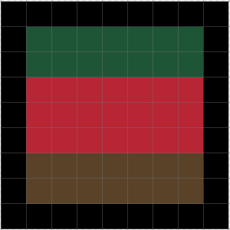
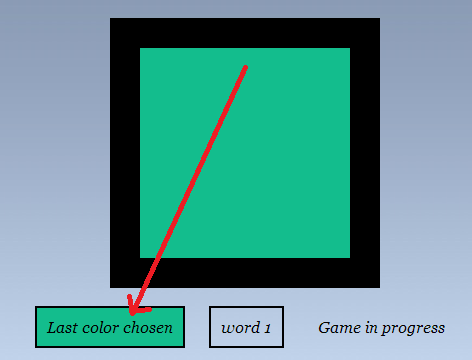
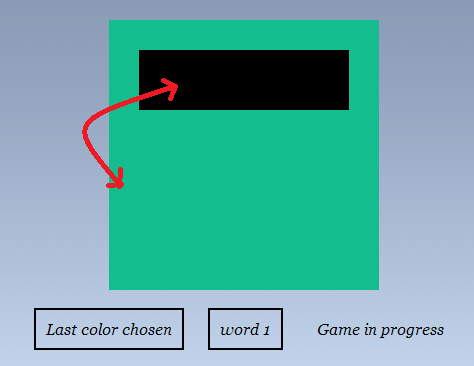

Last color chosen
Hola
Let's begin
Yan2 se4
Yan2 se4 in Mandarin means color.
The game is fairly simple to play. The figure below is divided into certain areas. You just need to swap the colors between two areas to create another image.
- The figure below shows the areas colored in different colors. But in the game, you will have all portions painted in the same color with a black border.

- Click inside a portion you want to change the color of. The background of text "Last Color Chosen" will then change to the color of the area you just clicked in.

- Click on the area you want to swap the colors with. The colors will swap immediately. The images below show how it is done.

Aim:Your aim is to swap colors in a way so as to create a character mentioned on the game page. Each game page will have an image with each section painted in a different color. It will also mention the character you need to create in the box just to the right of "Last Color Chosen".
The image below shows the character 上 formed, and the next character that needs to be created.
Play around with the canvas at the top by swapping colors and creating new patterns to get a feel of the game.